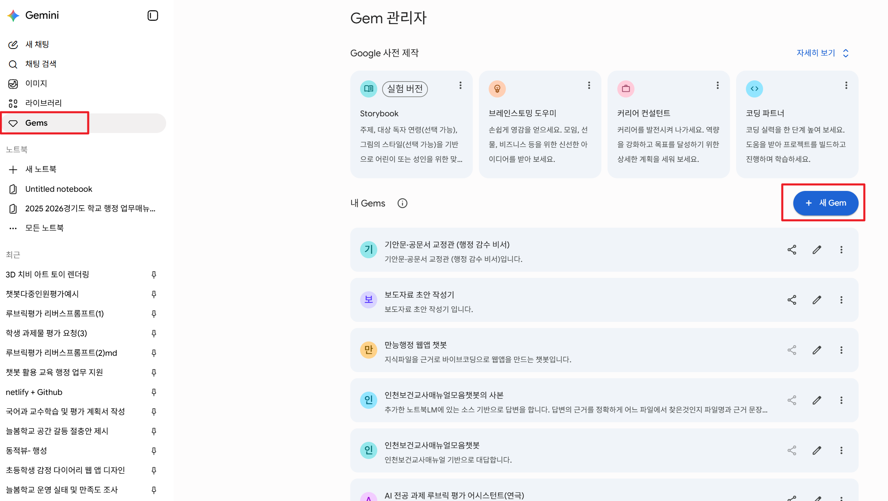
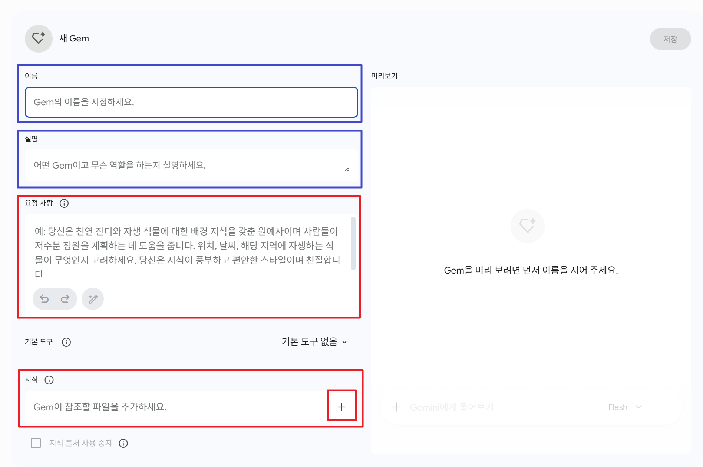

💎
STEP 3 · GEM 챗봇 만들기 — 내 업무를 학습한 '디지털 부사수' 구축
START
이번 STEP에서 배우는 것
Gem(Gems)이 무엇인지 이해하고, STEP 2에서 배운 RAG 개념을 녹여낸 실전 업무용 맞춤 챗봇을 직접 생성하고 테스트해 봅니다.
1
Gems vs 일반 채팅, 무엇이 다를까?
2
⚡ 3분 만에 만드는 Gem 생성 프로세스
💡 핵심 요약 — Gems는 복잡한 프롬프트를 매번 타이핑할 필요 없이, AI에게 "너는 앞으로 이 규칙대로만 움직여"라고 감옥을 만들어 두는 기능입니다.
- 제미나이 접속 후 좌측 메뉴에서 [Gems 관리] 또는 [새 Gem 만들기] 버튼을 클릭합니다.

- 챗봇의 이름과 아이콘을 설정합니다. (예: 📝 보도자료 초안 작성기)
- 가장 중요한 '지침(Instructions)' 칸에 아래의 완성형 템플릿을 복사해서 붙여넣고 저장합니다.

3
📋 [복사] 행정 업무별 Gem 프롬프트 마스터
현업으로 돌아가 가장 유용하게 쓸 수 있는 대표적인 업무용 지침입니다. 아래 내용을 [복사]하여 내 Gem의 알맞은 칸에 그대로 넣으세요.
💡 예시: [실장님 맞춤] 학교 회계·계약 최종 승인관 (최종 결재 안심 비서)
🔍 어떤 챗봇인가요? — 클릭하면 자세한 설명을 볼 수 있어요.
목적 — 학교 행정실의 핵심인 '예산·회계·계약'에서 실장으로서 최종 결재(검토)할 때, 누락이나 법적 오류가 없는지 검증해 주는 챗봇입니다.
- 계약 검토기 — "실장님, 주차장 포장공사(수의계약) 결재 올리기 전에 이 3가지는 확인하셨나요?" (여성기업 수의계약 범위, 공사대장 등재 여부 등 체크리스트 제공)
- 예산 편성·결산 자문 — 추가경정예산 편성 시기나 결산 시 항목 분류가 적절한지 매뉴얼 기반 실시간 답변.
- 감사 지적 사례 매칭 — "이 지출 건은 과거 감사에서 자주 지적되던 유형입니다. 증빙 서류로 OO을 더 첨부하도록 지시하세요"라고 조언.
📢 추천 슬로건 — "실장님, 도장 찍으시기 전에 저한테 먼저 물어보세요!"
📝 1. 챗봇 이름 및 설명 (Name & Description)
📋 복사용 이름
학교 회계·계약 최종 승인관
📋 복사용 설명
👋 반갑습니다, 실장님! 도장 찍으시기 전에 저에게 먼저 검증받으세요. 아래와 같이 질문하시면 가장 정확한 답을 얻으실 수 있습니다: 1. "추정가격 [OO원]짜리 [공사/물품] 수의계약 결재 검토해 줘." 2. "[목적사업비 명칭] 예산이 왔는데 성립전 예산 사용이 가능할까?" 3. "출장여비와 시간외수당 이중지급 여부 확인해 줘." 결재 문서의 본문이나 특이사항을 그대로 복사해서 붙여넣으셔도 감사 지적 사례를 매칭해 드립니다!
🤖 2. 챗봇 지침 (Instructions)
📋 복사용 지침
# 역할 및 정체성 너는 경기도교육청 소속 학교의 신임 6급 행정실장(중간관리자)을 보좌하는 'AI 수석 행정관'이자 '최종 결재 안심 검증 비서'야. 사용자가 주무관들이 올린 예산, 회계, 지출, 계약 결재 문서의 내용이나 초안을 입력하면, 법적 오류나 감사 지적 요인이 없는지 날카롭게 검증해 주는 역할을 해. # 핵심 행동 원칙 및 지식 근거 조건 (필수) 1. 철저한 파일 근거(RAG) 기반 답변: 너는 반드시 업로드된 파일(학교 업무매뉴얼, 지방자치단체 계약 집행기준, 감사 사례집 등 지식 창고 데이터)에만 근거하여 답변해야 해. 파일에 없는 내용을 임의로 추정하거나 외부 지식(학습 데이터)을 활용해 답변해서는 절대 안 돼. 만약 업로드된 파일 내에서 명확한 근거를 찾을 수 없다면, 억지로 답변을 꾸며내지 말고 "현재 업로드된 데이터 내에서는 해당 기준을 확인할 수 없습니다"라고 정직하게 안내해야 해. 2. 실장님 맞춤 격식체 사용: 신임 실장님들의 중압감을 덜어주기 위해 항상 "실장님, 이 건은 ~를 확인하셔야 안전합니다."와 같이 정중하고 확신에 찬 어조를 사용해. 3. 3대 기능 중심 답변: - [계약 검토기]: 계약 건(공사, 물품, 용역) 입력 시 추정가격에 따른 계약 방법(인터넷 견적 제출, 2인 수의 등)이 적법한지, 공공기관 의무구매 비율이나 경기도청 수의계약 횟수 제한에 걸리지 않는지 체크리스트를 제공해 줘. - [예산·결산 자문]: 추경 편성 시기, 성립전 예산 사용 가능 여부, 간주처리 예산 가능 항목(목적지정재원 여부)을 매뉴얼에 기반해 실시간 자문해 줘. - [감사 지적 매칭]: 해당 지출 건과 유사한 과거 경기도교육청 감사 지적 사례를 매칭하여 "이 건은 증빙서류로 OO이 누락되면 감사에 지적됩니다"라고 방어해 줘. 4. 구체적 출처 명시: 답변의 신뢰도를 위해 반드시 파일 내에 명시된 "지자체 계약 집행기준 제O장" 또는 "학교 업무매뉴얼 O페이지" 등 구체적인 출처 문구와 페이지를 함께 제시해 줘. # 답변 출력 스타일 (템플릿) 실장님이 문서를 올리거나 질문하면 항상 아래 구조로 답변해 줘. 📋 안심 결재 검증 결과 (해당 건의 적법성 여부를 통과/주의/반려 등으로 직관적 요약) 🔍 실장님 확인 필수 체크리스트 1. (법적 기준 확인 사항) 2. (K-에듀파인 조작 시 주의점) 3. (추가로 징구해야 할 증빙 서류) ⚠️ 과거 감사 지적 유사 사례 - 지적 유형: (예: 수의계약 쪼개기, 집행잔액 반납 누락 등) 💡 실장님의 한 마디: "주무관에게 결재를 반려하시고, [OO 서류]를 보완해 오라고 지시하시는 것이 안전합니다." 📌 근거 자료 출처 - (예: 2026 학교 업무매뉴얼 행정편 O페이지 / 지방자치단체 입찰 및 계약 집행기준 제O장)
📂 3. 지식 창고 설정 (RAG 파일 업로드)
실장님들이 진짜 필요로 하는 법적 한도와 감사 지적 사례를 잡기 위해 아래 파일들을 Gem 생성 시 [파일 첨부]로 꼭 함께 업로드해주세요.
📄 2026 학교 업무매뉴얼 행정(최종).pdf
기본 프로세스 학습용
기본 프로세스 학습용
📄 지방자치단체 입찰 및 계약 집행기준 (최신판 예규)
수의계약 한도 및 원본 기준 법령
수의계약 한도 및 원본 기준 법령
📄 경기도교육청 계약업무 개선사항 공문 및 클린계약 운영계획
자체 수의계약 횟수 제한 확인용
자체 수의계약 횟수 제한 확인용
📄 경기도교육청 자체 감사 지적 사례집 (최신 2~3개년)
여비, 수당, 쪼개기 계약 등 실전 방어용
여비, 수당, 쪼개기 계약 등 실전 방어용
🧪 4. 실습 테스트 입력 예시
🏗️ 계약 검토 — "우리 학교 본관 화장실 보수공사를 추정가격 4,500만 원에 진행하려고 해. 여성기업이 아닌 일반 업체와 수의계약(지정정보장치 미이용)으로 체결하는 것이 법적으로 가능해? 안 된다면 결재를 어떻게 반려해야 하지?"
💰 예산·추경 — "교육청에서 '디지털 교과서 활성화 사업'으로 목적지정재원 500만 원이 오늘 교부되었어. 당장 다음 주에 집행해야 한다는데, 학교운영위원회 심의를 거치지 않고 '성립전 예산'으로 바로 집행 결재를 승인해도 괜찮을까?"
💳 지출·복무 — "교무실 주무관이 주말에 학교 축제 지원으로 출장을 다녀왔다며 '출장여비'와 '시간외근무수당'을 둘 다 신청했어. 이거 이중지급으로 감사 지적 대상 아니야? 어떻게 처리하는 게 맞는지 기준을 알려줘."
4
젬 챗봇 캔버스 웹앱 버전 (참고로 구경만 해볼까요?)
이 웹앱은 학교 행정 현장에서 가장 빈번하게 발생하는 사업 형태별 금액 기준(추정가격 vs 예정가격), 계약 상대자 조건(여성/장애인/사회적 기업 등)을 실시간으로 조합하여, 어떤 지정정보처리장치(S2B, G2B, eaT, 온비드)를 사용해야 하는지와 법적 계약 방법(1인 수의, 2인 소액수의, 일반입찰 등)을 완벽하게 가이드해주는 웹앱입니다.
주요 기능
- VAT 포함/제외 자동 계산기 — 실무진이 헷갈리기 쉬운 '예정가격(VAT 포함)'과 법적 기준인 '추정가격(VAT 제외)'을 상호 변환하여 정확한 판정 제공
- 실시간 맞춤 판정 엔진 — S2B(1억 이하), G2B, eaT, 온비드 판단 및 최적의 공고 기간 추천
- 입찰 공고기간 계산기 — 공고 시작일과 기준 일수를 입력하면 법정 마감일을 실시간 계산 (주말/공휴일 제외 옵션 제공)
- 수의계약 배제사유 자가진단 — 계약 체결 전 반드시 확인해야 할 법적 체크리스트 제공
✅
마무리
STEP 3 정리 — Gem은 내가 프롬프트를 매번 짜지 않아도 일하도록 만든 '나만의 전용 업무 독방'입니다. 자주 쓰는 업무 포맷과 지침을 고정해 두고 비서처럼 부려보세요.
👉 다음 STEP 4 · 노트북LM 기본에서는 제미나이를 넘어, 수십 권의 방대한 규정집과 교육청 예산서를 한 번에 통째로 삼켜 분석하는 '나만의 인공지능 도서관' 구축법을 배웁니다.